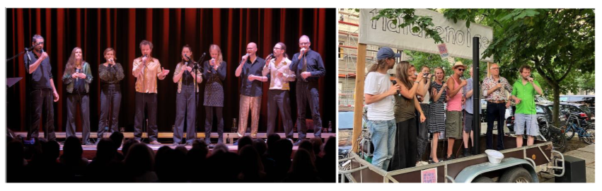

naturenoise ist seit 2009 auf den Bühnen Berlins und Brandenburgs aktiv und ein wirklich kleiner Chor. So klein, dass er samt Technik auf einen Anhänger passt. Und gleichzeitig groß genug, um die Bühne der Wabe zu füllen und dabei 200 Gäste glücklich zu machen. Das Konzept dazu ist einfach: „everybody needs time to shine“! Jede*r der neun Solist*innen darf also manchmal das Publikum durch die Interpretation eines persönlichen Lieblingssongs in den Bann schlagen, und ansonsten helfen, den gemeinsamen Klangteppich zu weben, der das nächst Solo trägt und beflügelt und strahlen lässt.
Das Repertoire umfasst vorwiegend moderne Klassiker des Pop, garniert mit experimentellen Farbtupfern, Volksliedinterpretationen, jazzigen Harmonien und einer Prise musikalischem Klamauk. Dass die vokalen Arrangements aus der eigenen Feder stammen, sorgt, zusammen mit dem langen Bestehen, für einen typischen naturenoise Sound, der die breite Songpalette organisch miteinander verbindet.konzerte
Seid dabei 🥳
- 19.02.2026 – Berlin, Klimasalon Lichtenberg
Leider vorbei 😭
- 06.12.2025 – Berlin, Jugendfunkhaus Lichtenberg
- 19.09.2025 – Berlin, Wagenplatz Karow (Sommerfest)
- 25.06.2025 – Berlin, Potsdamer Platz (after work concert)
- 16.03.2025 – Berlin, Philharmonie
- 14.09.2024 – Berlin, Unplugggedival
- 20.04.2024 – Berlin, Wabe (15 Jahre naturenoise)
- 11.07.2015 – Berlin, Pfefferwerk
medien
Foto

Audio
Ihr findet einige Aufnahmen auf Soundcloud. Wer Lust hat bestellt unsere CD “Einziger Erstling”!

Video
(Sign your name, 2019)
(Man in the mirror, 2021)
Noch mehr Videos gibt es auf unserem YouTube Kanal.
Kontakt
Impressum
Angaben gemäß § 5 TMG und § 18 MStV
naturenoise
c/o Magnus Hellmann
Dolomitenstrasse 44
13187 Berlin
Deutschland
E-Mail: kontakt@naturenoise.de
Verantwortlich für den Inhalt nach § 18 Abs. 2 MStV:
Magnus Hellmann (Anschrift s.o.)